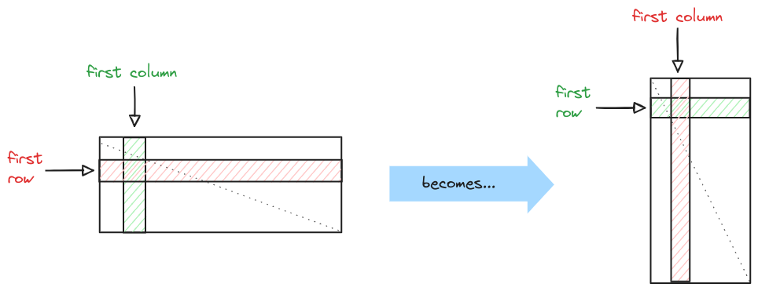
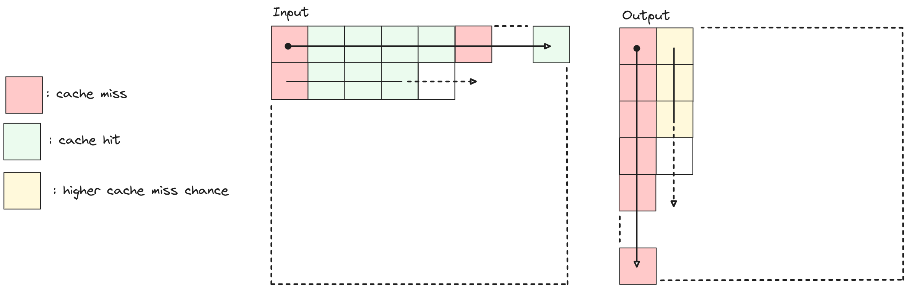
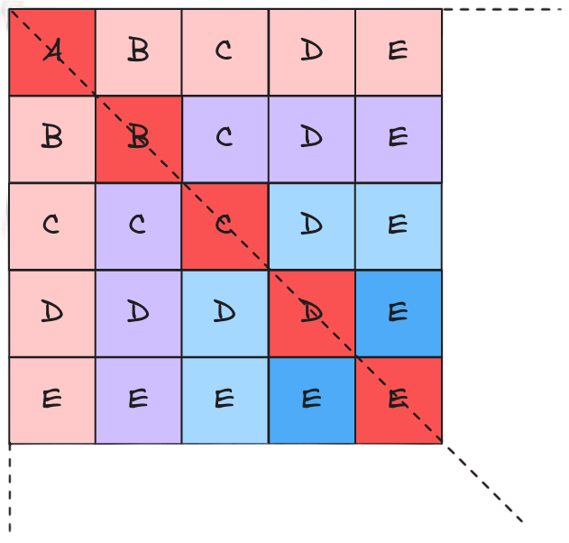
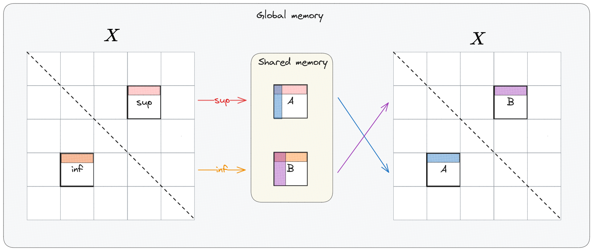

The (first) problem : Matrix transposition
Computing the transpose of a given matrix \(X^{n,m}\) having \(n\) rows and \(m\) columns means nothing more than computing \(t(X^{n,m}) = Y^{m,n} \) such that the first row of
\(X\) becomes the first column of \(Y\), same thing for the second row and second column, etc. etc...

This might look like a silly operation, but it actually has more uses than it might look...
For this case study we'll be dealing with sqaured matrix for simplicity, but the overall thinking also works for the rectangular case.
CPU case
A naive implementation to solve this problem might be the following :
\BEGIN {algorithm}
\CAPTION {- Naive matrix transposition}
\BEGIN {algorithmic}
\STATE \TEXTBF{Input:} X
\STATE \TEXTBF{parameters:} matrix-size
\STATE ---
\FOR {i = 0 to matrix-size}
\FOR {j = i+1 to matrix-size}
\STATE swap X(i,j) with X(j,i)
\ENDFOR
\ENDFOR
\STATE return X
\END {algorithmic}
\END {algorithm}
\(X\) being squared implies \(t(X)\) is equivalent to computing the symmetry along the main diagonal, for this reason elements on the main diagonal don't need to be moved. The provided solution has time complexity of \(O(n^2 - n)\).
Anyway, there's room of improvement if the
cache behaviour is taken into account :
Taking into account the matrix transposition problem and assuming for simplicity that read and write operations are done on 2 separate matrices \(X\) and \(Y\) what happens is that :
-
While reading X : reading the first element will result into a miss since the matrix has never been accessed. Next accesses will be faster due to caching until the cache line is exhausted.
-
While writing \(Y\) : the entire first column will consist of cache misses since elements are stored in row-major order and not column-major. When parsing the second column elements might still be available in cache, but that's less likely to happen because in the mean time the entire first column has been parsed.

It's possible to better exploit
spatial and temporal locality principles in order to have a more efficient cache usage in such a way :
\(X\) is divided into
blocks of defined size and operations (swaps in our case) are performed more locally within elements belonging to symmetrical blocks (with respect to the main diagonal).
This allows a more localized job into the space and time domains.

Blocks belonging to the main diagonal are evaluated first respect to the others because they represent a sub-case, in which swaps are
performed inside a single block (and not a pair of blocks). Blocks are still accessed in row-column order after the diagonal is parsed.
GPU case

This is more or less a 1 to 1 translation of the in-place CPU block-based matrix transposition described above, but implemented with CUDA.
The most important aspect of this solution is the usage of shared memory which is \(\times100\) faster than the global memory (on no-cached accesses) and enables
coalesced writes.
Each thread block is in charge of copying 2 symmetrical blocks from \(X\) (one per side w.r.t the main diagonal) inside the shared memory, referred as \(A\) (superior block) and \(B\) (inferior block).
Once the copy is completed for both blocks each thread block proceeds copying \(A\) and \(B\) inside \(X\) following column major ordering on
reads and row major on writes. Notice also that write addresses on \(X\) of \(A\) and \(B\) are swapped.
For more info about our results an code, chechout the project's Report and GitHub page.
The (second) problem : Convolution on images
When applying a filter to an \(n\)-dimensional signal (\(n\in \mathbb{N}^+\)) one of the most common and effective operation is the convolution. In a 2-dimensional scenario, which is the
case for images, operations such as like blurring, sharpening and edge extraction can be performed using convolutions. Some deep learning architectures also massively take
advantage of convolution to automatically extract significant features from images. The wide-ranging applications of image convolution underscore the need
for an efficient implementation of the convolution operation. For a filter \(w\) of size \(n \times m\) and an image \(f\) the convolution operation is defined as :
\[
w(x,y) * f(x,y) = \sum_{s = 0}^{m-1} \sum_{t = 0}^{n-1} w(s,t) \cdot f(x-s,y-t)
\]
Implementations
Our design process went through several incremental optimization of the convolution operation based on a Divide-and-conquer type of paradigm
- CPU naive : Most direct and intuitive implementation. It is a straight-forward implementation of the mathematical convolution def-inition. The filter \(K\) is applied sequentially to every pixel in the image of \(I\)
- GPU naive : The idea behind the algorithm is the same as in (Algo. 1). But instead of processing each pixel sequentially, all pixels are computed in parallel. Each thread applies the kernel to all image channels
- GPU Shared Memory : Computation re-quires many repeated accesses to the kernel and the image patch. Faster memory access time for the kernel and the image patch should benefit the performances.
- GPU Shared Memory using Constant Memory : Since the kernel values do not change during the computation and the kernel size is relatively small, the kernel can be placed in the GPU's constant memory. Constant memory is a special part of the GPU's global memory, that is cached for efficient accesses
- Cached GPU Shared Memory using Constant Memory : When computing the convolution, image pixels which are inside the image patch processed by the thread block are loaded from shared memory. The other pixels are loaded from global memory. One can observe that in (4.) the padding of an image patch overlaps with the inner patch of
its neighboring patches. Therefore, there is a significant probability, that the padding of an image patch is already in L2 cache. Hence, the padding can be efficiently accessed, without extra coping the padding into shared memory for every image patch.
For more info about our results an code, chechout the project's
Report and
GitHub page.